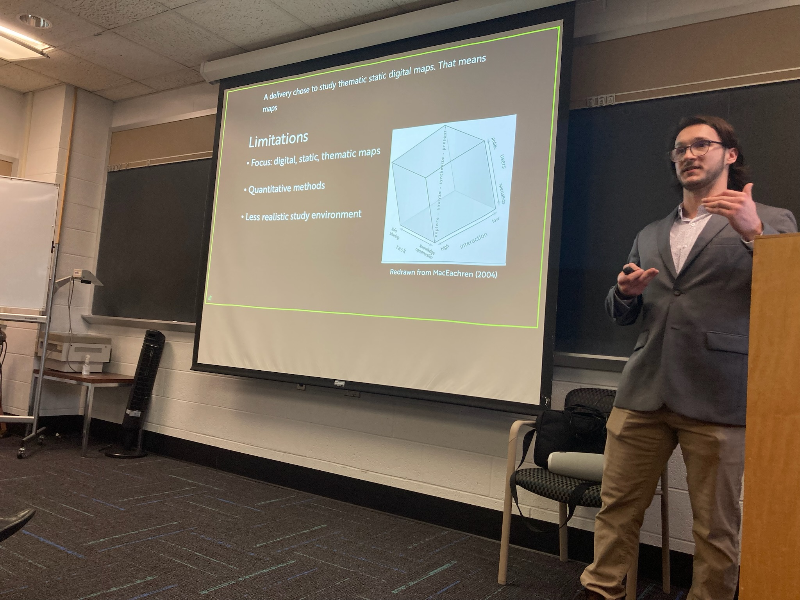
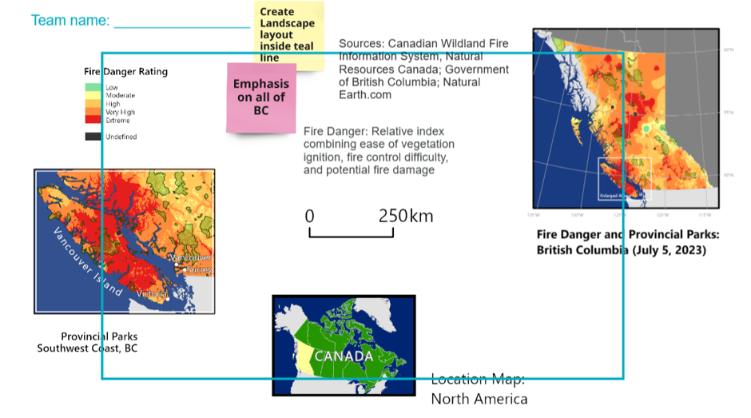
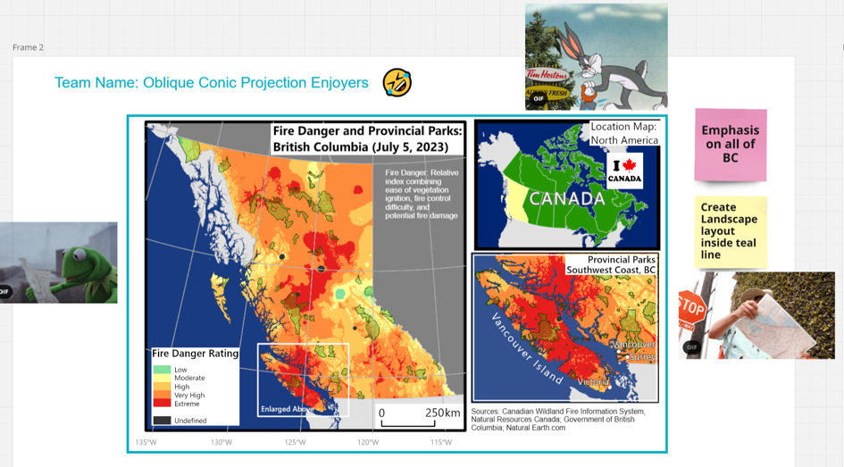
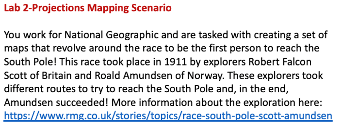
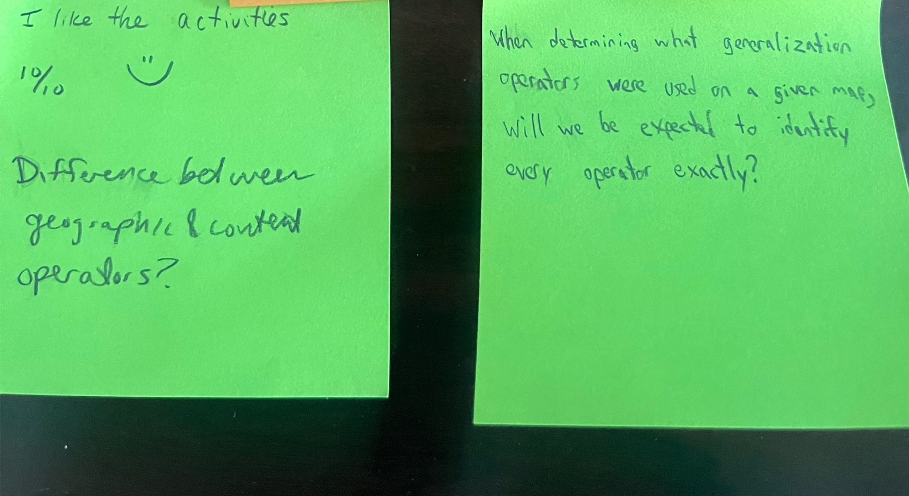

Teaching
I teach mapmaking courses involving cartography and GIS. At James Madison University, I teach introductory and intermediate geographic information science. At Penn State, I was an instructor for Geography 361: Maps and Map Construction
Teaching Philosophy
My teaching philosophy centers around fostering students' intrinsic motivation to learn. Specifically, I seek to cultivate students' skills and curiosity in GIScience so they can address real-world spatial problems.
Jump to Course Descriptions or Teaching Approaches

Course Descriptions
Geography 361: Maps and Map Construction
Maps do far more than get us from point A to point B. They help us understand election results, decide whether or not to pack a rain jacket, predict disease outbreaks, and so much more. At their core, maps visualize aspects of the world we could not otherwise see or experience; thereby enabling us to explore and understand geographic phenomena in new ways. Geography 361 (G361) introduces the fundamentals of cartography, defined as the art, science, technologies, and ethics of mapmaking and map use. Mapmaking is the primary emphasis of this course. Accordingly, this course explores evidence-based and time-tested best practices for designing effective maps. These best practices will be introduced in lectures, and the lab component of the course will require you to apply your understanding of lecture material while producing maps. In doing so, you will learn how to design both thematic and reference maps at multiple scales using symbols and visual hierarchies that allow the content of the maps to be effectively communicated. The course will also encourage you to become critical and ethical consumers of maps and geographic data produced by government agencies, industry, and the media. Special attention will be paid to how maps can mislead and distort reality.
Teaching Approaches
-
Active Learning: Students learn best when they are actively engaging in the learning process. This is especially the case in cartography and GIS where mastery requires iteration and practice. I embed ample activities including polls, think-pair-share, and jigsaw during class sessions to keep students engaged.
In this example, students were learning about layout and establishing a visual hierarchy on maps. Students were given a set of unorganized map elements and were given design constraints: creating a landscape layout that emphasizes all of British Columbia.
This is what they started with:

This is what they ended up achieving:

-
Relevant Learning: Students perform better and are more likely to retain information when they can see how what they are learning is relevant.
Particularly, students are more invested when they feel a sense of purpose and can connect a class to making a difference in the world.
One way I do this is by designing mapping assignments that reflect projects that practicing GIScientists and cartographers would be doing.
Below you can see an overview of a mapping assignment where students take the role of a National Geographic Cartographer.

-
Formative Learning: Students need ample and effective feedback to succeed. Therefore, formative assessment is central to my teaching philosophy.
I use exit slips to identify areas that students need additional help on. On anonymous post-its, students write down a question or two that they have, and I dedicate half of the next class period to answering these questions.
Below you can see some examples of the student exit slips.

- Inclusive Learning: Students have different needs in order to succeed in the classroom. I cultivate an inclusive environment by begining each course with a collaborative discussion where students and I establish ground rules for respectful participation and create a safe space for learning. I also incorporate diverse perspectives in my course materials by including maps of varying geographic regions, topics, and authors of diverse backgrounds.